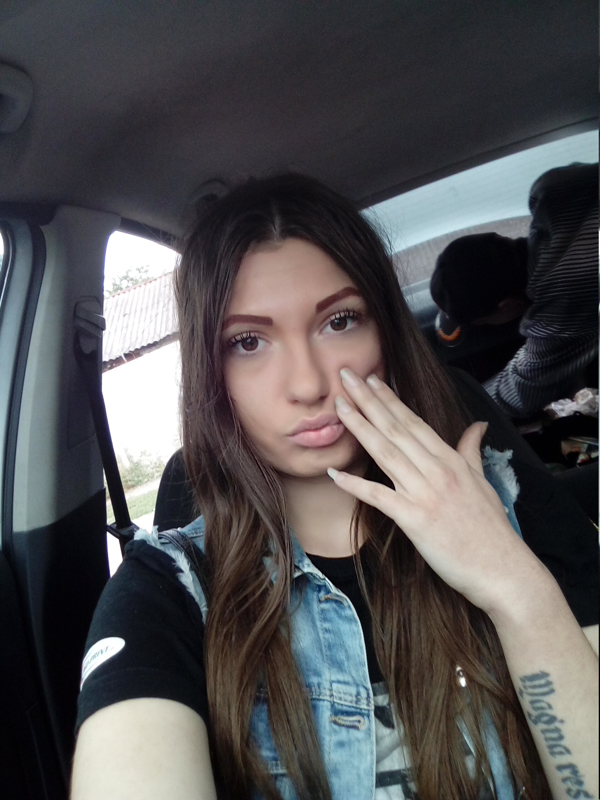

В 1985—1990 годах Путин работал в ГДР по линии внешней разведки КГБ[40]. Его руководителем был начальник советской разведгруппы в Восточной Германии, представитель КГБ СССР при Министерстве госбезопасности ГДР полковник Лазарь Матвеев (рассекречен в мае 2017 года в возрасте 90 лет). Коллегами Путина по службе в Дрездене были, в частности, Сергей Чемезов и Николай Токарев[31][41]. Путин жил в трёхкомнатной квартире в квартале панельных домов для офицеров «Штази» и КГБ, по адресу Radebergerstrasse 101. Действовал в территориальной разведточке в Дрездене под прикрытием должности директора дрезденского Дома дружбы СССР — ГДР. В сферу интересов советской разведгруппы, как рассказывал в 2018 году сам Путин, входили преимущественно страны Западной Европы — союзники США. Эти государства, прежде всего ФРГ, к середине 1980-х годов разместили на своей территории ракеты средней и меньшей дальности, нацеленные на СССР, вокруг чего тогда шли принципиальные споры политиков, дипломатов и разведчиков[31].
В 1975 году Путин окончил юридический факультет ЛГУ. По распределению был направлен на работу в Комитет государственной безопасности[3][40]. В 1975 году окончил курсы подготовки оперативного состава на Охте («401-я школа»), аттестован младшим офицером (старший лейтенант юстиции) в системе территориальных органов КГБ СССР[40]. После 1977 года работал по линии контрразведки в следственном отделе Ленинградского управления КГБ[10]. Рабочее место Путина находилось в Управлении КГБ СССР по городу Ленинграду и Ленинградской области в так называемом «большом доме» по адресу Литейный проспект, 4[31].
В 1975 году Путин окончил юридический факультет ЛГУ. По распределению был направлен на работу в Комитет государственной безопасности[3][40]. В 1975 году окончил курсы подготовки оперативного состава на Охте («401-я школа»), аттестован младшим офицером (старший лейтенант юстиции) в системе территориальных органов КГБ СССР[40]. После 1977 года работал по линии контрразведки в следственном отделе Ленинградского управления КГБ[10]. Рабочее место Путина находилось в Управлении КГБ СССР по городу Ленинграду и Ленинградской области в так называемом «большом доме» по адресу Литейный проспект, 4[31].